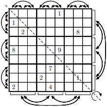

对于两个 (不一定有解的) 数独谜题 $P, Q$，定义 $P, Q$ 相似当且仅当 $P$ 可以经过下列操作之一变为 $Q$，或存在数独 $R$ 使得 $P, R$ 和 $Q, R$ 均相似：
选择两个数字 $x, y$ ($1 \leq x, y \leq 9; x \neq y$)，将谜题中所有的 $x$ 变为 $y$，$y$ 变为 $x$。
在 $\left( 1, 2, 3 \right), \left( 4, 5, 6 \right), \left( 7, 8, 9 \right)$ 三个三元组中，选择两个，作为整体交换以它为下标的行。
选择 $x, y$ ($x \neq y$)，满足 $x, y$ 在上述同一个三元组中，交换谜题的第 $x$ 行和第 $y$ 行。
在 $\left( 1, 2, 3 \right), \left( 4, 5, 6 \right), \left( 7, 8, 9 \right)$ 三个三元组中，选择两个，作为整体交换以它为下标的列。
选择 $x, y$ ($x \neq y$)，满足 $x, y$ 在上述同一个三元组中，交换谜题的第 $x$ 列和第 $y$ 列。
取该谜题的转置。
所有 $6$ 种操作如下图所示：
现在给定若干个数独谜题，你需要判断它们两两是否相似。
第一行包含一个正整数 $n$ ($n \leq 20$)，表示数独谜题的数量。
接下来输入 $n$ 个谜题，每个谜题共 $9$ 行，每行一个长度为 $9$ 的字符串，只包含数字 $\texttt 1 \sim \texttt 9$ 和字符 $\texttt .$ (表示空格子)。
相邻两个谜题之间用一个空行隔开。
输出 $\dbinom n2$ 块，每块描述一对数独谜题是否相似。输出的顺序为 $\left( 1, 2 \right), \left( 1, 3 \right), \cdots, \left( 1, n \right), \left( 2, 3 \right), \left( 2, 4 \right), \cdots, \left( n - 1, n \right)$。
对于每一块 $\left( i, j \right)$，如果第 $i$ 个数独谜题 $P_i$ 和第 $j$ 个数独谜题 $P_j$ 不相似，则仅需输出一行 No。否则第一行输出 Yes，并给出一组使第 $P_i$ 变为 $P_j$ 的方案：
第一行输出一个整数 $q$ ($q \leq 1000$)，表示方案所需的操作次数。
接下来 $q$ 行，按顺序每行描述一次操作，格式如下：
D x y ($1 \leq x, y \leq 9; x \neq y$)，表示将所有的 $x$ 变为 $y$，$y$ 变为 $x$。R a b ($1 \leq a, b \leq 3; a \neq b$)，表示交换第 $3 a - t$ 行和第 $3 b - t$ 行，其中 $t = 0, 1, 2$。r a b ($1 \leq \left \lceil \dfrac a3 \right \rceil = \left \lceil \dfrac b3 \right \rceil \leq 9; a \neq b$)，表示交换第 $a$ 行和第 $b$ 行。C a b ($1 \leq a, b \leq 3; a \neq b$)，表示交换第 $3 a - t$ 列和第 $3 b - t$ 列，其中 $t = 0, 1, 2$。c a b ($1 \leq \left \lceil \dfrac a3 \right \rceil = \left \lceil \dfrac b3 \right \rceil \leq 9; a \neq b$)，表示交换第 $a$ 列和第 $b$ 列。F，表示取转置。可以证明，若两个数独谜题相似，则一定存在一个长度不超过 $1000$ 的操作序列。如果有多组解，输出任意一组均可。
由于每一对之间都要比较，下面只考虑判断某一对 $\left( P, Q \right)$ 是否相似。
对于一个 $9 \times 9$ 的表格，考虑关于行的变换，可知一共有 $6^4 = 1296$ 种不同的变换。
那么如果暴力枚举的话，列也要这么多变换，于是不讨论转置和数值，仅仅是位置之间的移动就已经有 $6^8 \approx 1.68 \times 10^6$ 种变换了，这样再乘上 $n^2$ 就会 TLE。
那怎么办呢？类似 BSGS (分块) 的思想，如果不考虑转置和数值，我们对于每个表格 $P$，存储它所有 $1296$ 种行变换的结果，记为 $RT \left( P \right)$。那么，对于外来的表格 $Q$，我们只需要枚举它的 $1296$ 种列变换的结果，逐一判断它们是否在 $RT \left( P \right)$ 中即可。
那判断相等的问题就可以通过 Hash 来解决，即对于每个表格存储它所有 $1296$ 种行置换的 Hash 和 $1296$ 种列置换的 Hash，然后比较时只需判定第一张表格的行置换 Hash 和第二张表格的列置换 Hash 是否有交即可。
如果有交，则像这里一样使用一次强制比较即可，容易输出方案。
(ps: 如果不考虑数值，其实它就是一个 $81$ 元集合，也没必要 Hash，用一个 __int128 就能存得下来)
接下来考虑有转置和数值的情形。
首先转置很简单，可以证明转置只会进行 $0$ 或 $1$ 次，因此只需在最外边枚举是否转置做两遍即可。
然后考虑有数值的情形。由于数值的置换是任意的 (共有 $9 !$ 种情形)，因此决不能暴力枚举，此时我们考虑进行 Hash。首先，我们仍然对每个 $1, 2, \cdots, 9$，计算出每一种数的出现位置集合 (作为一个 $128$ 位整数)，设为 $c_1, c_2, \cdot, c_9$。那么，对于这个盘面，我们希望它的 Hash 值 $H \left( c_1, c_2, \cdots, c_9 \right)$ 关于自变量 $c_1, c_2, \cdots, c_9$ 是完全对称的。
因此一个较好的解决方案是，取一个较复杂的单值 Hash 函数 $\Gamma$，令 $$ H \left( c_1, c_2, \cdots, c_9 \right) = \Gamma \left( c_1 \right) \oplus \Gamma \left( c_2 \right) \oplus \cdots \oplus \Gamma \left( c_9 \right) $$ (中间的异或 $\oplus$ 也可以换成加法 $+$)
这样，这个 Hash 函数也是比较有效的，判定时仍然是先判断 Hash 值是否相等，如果相等再进行强制比较，即判断可重集 $\left\{ c_1, c_2, \cdots, c_9 \right\}$ 是否一致。
具体比较时，根据使用的数据结构是 map，unordered_map 还是双指针 (见此处)，时间复杂度为 $O \left( \left| G \right| \right)$ 或 $O \left( \left| G \right| \log \left| G \right| \right)$，这里 $\left| G \right| = 1296$。
于是总时间复杂度 $O \left( n^2 \left| G \right| \right)$ 或 $O \left( n^2 \left| G \right| \log \left| G \right| \right)$，可以通过。
#include <bits/stdc++.h>
#define EB emplace_back
using std::cin;
using std::cout;
using std::vector;
typedef unsigned int u32;
typedef unsigned long long u64;
typedef unsigned __int128 u128, u128set[9];
typedef std::pair <int, int> pr;
typedef std::pair <u64, int> pli;
constexpr u128 one = 1, row_mask = 0x1ffull, col_mask = one << 72 | 0x8040201008040201ull;
const int basic_res[6][3] = {
{0, 1, 2}, {1, 0, 2}, {2, 1, 0}, {0, 2, 1}, {1, 2, 0}, {2, 0, 1}
};
const vector <pr> basic_op[6] = {
{},
{{0, 1}},
{{0, 2}},
{{1, 2}},
{{0, 1}, {1, 2}},
{{1, 2}, {0, 1}}
};
struct permutation {vector <pr> op; int res[9];} p[1296];
u64 compress(u128 x) {
static u64 y;
x ^= x << 11, x ^= x >> 45, x ^= x << 14, y = x % 0xffffffffffffffc5ull;
return y ^= y << 13, y ^= y >> 7, y ^= y << 17, y * 0xb7e151628aed2a6b + 0x243f6a8885a308d3ull;
}
struct sudoku {
char s[9][9];
u128set pos, tpos;
u128set rowperm[1296], colperm[1296], tcolperm[1296];
u64 rowperm_h[1296], colperm_h[1296], tcolperm_h[1296];
friend std::istream & operator >> (std::istream &in, sudoku &B) {
int i; static char buf[20];
for (i = 0; i < 9; ++i) in >> buf, memcpy(B.s[i], buf, 9);
return in;
}
void init() {
int i, j, k; u32 x; u128 part[9][9];
memset(pos, 0, 144), memset(tpos, 0, 144);
for (i = 0; i < 9; ++i)
for (j = 0; j < 9; ++j)
if ((x = (u32)s[i][j] - 49u) < 9u)
pos[x] |= one << (i * 9 + j),
tpos[x] |= one << (i + j * 9);
// row
for (i = 0; i < 9; ++i)
for (j = 0; j < 9; ++j) part[i][j] = pos[i] >> (j * 9) & row_mask;
for (k = 0; k < 1296; ++k) {
u128set &Z = rowperm[k]; int (&q)[9] = p[k].res;
u64 &H = rowperm_h[k]; H = 0;
for (i = 0; i < 9; ++i) {
for (Z[i] = j = 0; j < 9; ++j) Z[i] |= part[i][q[j]] << (j * 9);
H ^= compress(Z[i]);
}
}
// column
for (i = 0; i < 9; ++i)
for (j = 0; j < 9; ++j) part[i][j] = pos[i] >> j & col_mask;
for (k = 0; k < 1296; ++k) {
u128set &Z = colperm[k]; int (&q)[9] = p[k].res;
u64 &H = colperm_h[k]; H = 0;
for (i = 0; i < 9; ++i) {
for (Z[i] = j = 0; j < 9; ++j) Z[i] |= part[i][q[j]] << j;
H ^= compress(Z[i]);
}
}
// transpose + column
for (i = 0; i < 9; ++i)
for (j = 0; j < 9; ++j) part[i][j] = tpos[i] >> j & col_mask;
for (k = 0; k < 1296; ++k) {
u128set &Z = tcolperm[k]; int (&q)[9] = p[k].res;
u64 &H = tcolperm_h[k]; H = 0;
for (i = 0; i < 9; ++i) {
for (Z[i] = j = 0; j < 9; ++j) Z[i] |= part[i][q[j]] << j;
H ^= compress(Z[i]);
}
}
}
pr compare(const sudoku &B) {
int i, j, k, a, b, u, v; static pli w[3888]; static u128 buf[18]; static int HC = 0;
for (i = 0; i < 1296; ++i)
w[i] = pli(rowperm_h[i], i),
w[i + 1296] = pli(B.colperm_h[i], i + 0x10000),
w[i + 2592] = pli(B.tcolperm_h[i], i + 0x30000);
std::sort(w, w + 3888);
for (j = i = 0; i < 3888; i = j) {
for (k = i - 1; j < 3888 && w[i].first == w[j].first; ++j) if (!(w[j].second & 0x10000)) k = j;
if (i == ++k || k == j) continue;
for (a = i; a < k; ++a)
for (b = k; b < j; ++b) {
std::tie(u, v) = pr(w[a].second, w[b].second), v &= 0x2ffff,
memcpy(buf, rowperm[u], 144),
memcpy(buf + 9, v & 0x20000u ? B.tcolperm[v & 0xffff] : B.colperm[v], 144);
std::sort(buf, buf + 9), std::sort(buf + 9, buf + 18);
if (!memcmp(buf, buf + 9, 144)) return pr(u, v);
fprintf(stderr, "Hash collision %d time(s).\n", ++HC);
}
}
return pr(-1, -1);
}
} a[20];
void gen_permutations() {
int I, i, j, k, si, sj, sk, v, o[9], O[3], n = 0; vector <pr> w;
for (I = 0; I < 6; ++I) {
memcpy(O, basic_res + I, 12), w.clear();
for (const pr &e : basic_op[I]) w.EB(~e.first, ~e.second);
si = w.size();
for (i = 0; i < 6; ++i) {
memcpy(o, basic_res + i, 12), w.resize(si);
for (const pr &e : basic_op[i]) w.EB(e);
sj = w.size();
for (j = 0; j < 6; ++j) {
memcpy(o + 3, basic_res + j, 12), w.resize(sj);
for (const pr &e : basic_op[j]) w.EB(e.first + 3, e.second + 3);
sk = w.size();
for (k = 0; k < 6; ++k) {
memcpy(o + 6, basic_res + k, 12), w.resize(sk);
for (const pr &e : basic_op[k]) w.EB(e.first + 6, e.second + 6);
for (v = 0; v < 9; ++v) p[n].res[v] = O[v / 3] * 3 + o[v];
p[n++].op = w;
}
}
}
}
assert(n == 1296);
}
void output(const sudoku &A, const sudoku &B, int perm_a, int perm_b) {
int i, j, size = 0; static std::ostringstream os; os.str("");
bool final_flip = perm_b & 0x20000; perm_b &= 0xffff;
u128set Ai, Bi;
for (const pr &e : p[perm_a].op)
if (++size, e.first >> 31)
os << 'R' << ' ' << -e.first << ' ' << -e.second << '\n';
else os << 'r' << ' ' << e.first + 1 << ' ' << e.second + 1 << '\n';
for (i = p[perm_b].op.size() - 1; i >= 0; --i) {
const pr &e = p[perm_b].op[i];
if (++size, e.first >> 31)
os << 'C' << ' ' << -e.first << ' ' << -e.second << '\n';
else os << 'c' << ' ' << e.first + 1 << ' ' << e.second + 1 << '\n';
}
if (final_flip) ++size, os << 'F' << '\n';
memcpy(Ai, A.rowperm[perm_a], 144),
memcpy(Bi, final_flip ? B.tcolperm[perm_b] : B.colperm[perm_b], 144);
for (i = 0; i < 8; ++i) {
j = std::find(Ai + i, Ai + 9, Bi[i]) - Ai, assert(j != 9);
if (i != j)
++size, os << 'D' << ' ' << i + 1 << ' ' << j + 1 << '\n',
std::swap(Ai[i], Ai[j]);
}
assert(Ai[8] == Bi[8]);
cout << size << '\n' << os.str();
}
int main() {
int i, j, u, v, n;
std::ios::sync_with_stdio(false), cin.tie(NULL);
gen_permutations(), cin >> n;
for (i = 0; i < n; ++i) cin >> a[i], a[i].init();
for (i = 0; i + 1 < n; ++i)
for (j = i + 1; j < n; ++j) {
std::tie(u, v) = a[i].compare(a[j]);
if (~u) cout << "Yes\n", output(a[i], a[j], u, v);
else cout << "No\n";
}
return 0;
}
坑1：最终输出时要用对换去合成一般的置换，顺序不要写反了 (没有交换律)。
坑2：如果使用排序双指针，那么只有来自两个表格的相同 Hash 值才要参与强制比较，一个表格的两个相同 Hash 值 (这是有可能的，比如两个空行) 是不需要参与强制比较的。